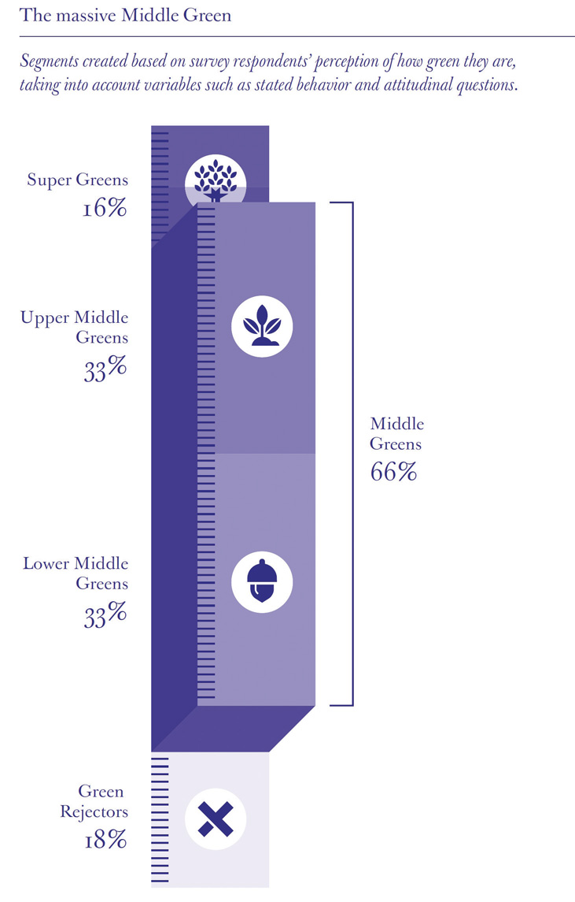
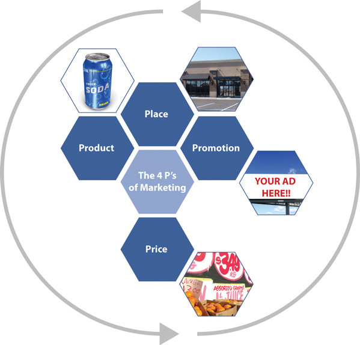
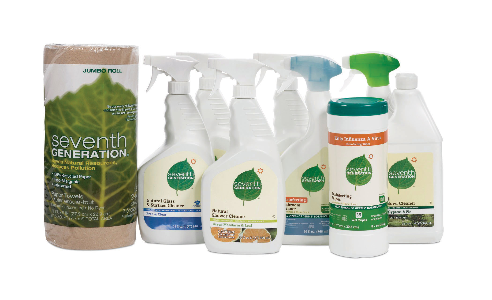
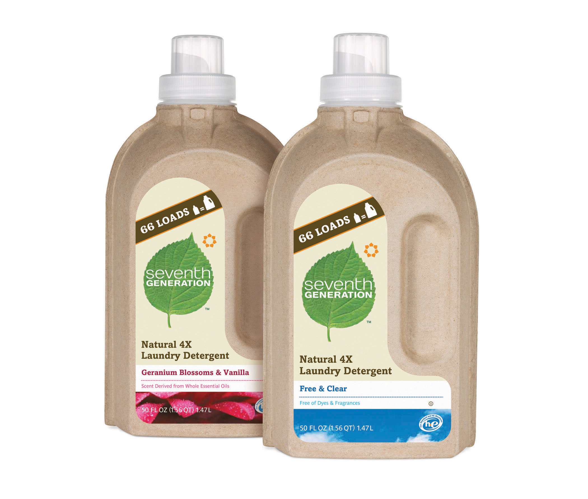
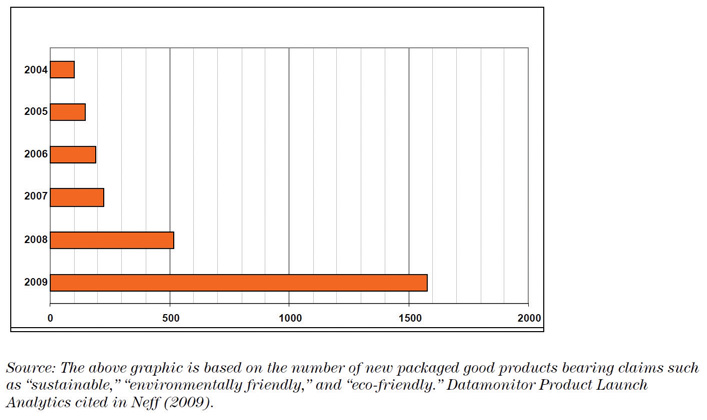
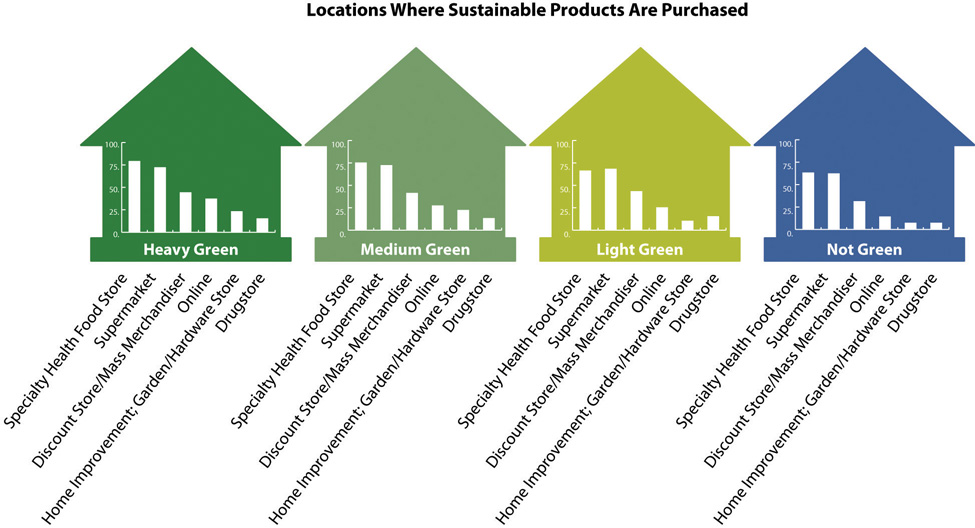

Seventh Generation’s marketing has focused on offering consumers the opportunity to act on their idealism, passion, and commitment to causes larger than themselves at the supermarket each week. Consumers could get this when they purchased a Seventh Generation product.
Seventh Generation’s Global ImperativesSeventh Generation, 2007 Corporate Consciousness Report, http://www.seventhgeneration.com/files/assets/pdf/2007_SevGen_Corporate-Consciousness.pdf.
1. As a business we are committed to being educators and to encourage those we educate to create with us a world of equity and Justice, health and wellbeing.
2. To achieve that we must create a world of more conscious workers, citizens and consumers.
3. We are committed to creating a world that is rich in value as contrasted to a world that is rich in artifacts.
4. We will work to create Governance and social systems that increase the capacity for understanding differing perspectives and points of view.
5. We believe that our business and all businesses should engage in the personal development of everyone who works for them.
6. We are committed to approaching everything we do from a systems perspective, a perspective that allows us to see the larger whole, not a fragmented, compartmentalized world, not just what we want to see, our own point of view, our own reality, but a world that is endlessly interconnected, in which everything we do effects everything else.
7. We must ensure that globally, natural resources are used and renewed at a rate that is always below their rate depletion.
8. And lastly we are committed to creating a business where all our products, raw materials, byproducts, and the processes by which they are made are not just sustainable but restorative, and enhancing the potential of all of life’s systems.
Seventh Generation derived its name from the Great Law of the Iroquois that states, “In our every deliberation, we must consider the impact of our decisions on the next seven generations.” Seventh Generation strives to live up to that brand promise with a full line of household cleaning and personal care products—from laundry detergents to baby wipes that are safer for people and safer for the environment. This positioning is prevalent within the company and is at the very core of their business model and marketing approach.
Brand
A brand is a name, term, sign, symbol, design, or a combination of these intended to identify the goods and services of one seller and to differentiate the seller from those of other sellers. Branding is about getting potential consumers to view a seller as the only one that provides a solution to their problem. A brand is an image in the consumer’s mind and one that must be constantly fulfilled to remain positive.
According to Seventh Generation, somewhere between 40 percent and 60 percent of all people in the United States have an interest in or are already purchasing some green products. Their market research studies also concluded that new moms, in particular, were more likely than others to purchase sustainable products for their new family to create a healthier home and planet.Romy Ribitzky, “Seventh Generation Embarks on First Ever National Ad Campaign,” Portfolio.com, February 11, 2010, http://bit.ly/NTEMPN. The company’s marketing mix reflected a focus on the “middle greenRepresenting about two-thirds of consumers, these people have good green intentions but are not dedicated to buying only green products and services.” consumers and moms, particularly newer moms.
Survey of Consumers’ Green Intentions
A 2011 study by the consultant group OgilvyEarth“Mainstream America Unmoved by Green Marketing,” SustainableBusiness.com, http://www.sustainablebusiness.com/index.cfm/go/news.display/id/22277. found that 82 percent of Americans have good green intentions but only 16 percent are dedicated to fulfilling these intentions, putting 66 percent firmly in what the report called the middle green. The other two groups the report labeled were the super greens who are the 16 percent who are dedicated to green intentions and on other end of the green consumer spectrum, the 14 percent who were green rejecters who do not have any green intentions.
Figure 8.2
Source: Graceann Bennett and Freya Williams, Mainstream Green (OgilvyEarth, 2011), http://bit.ly/gdpVjL.
The marketing mix, also known as the four Ps of marketing, is the combination of product, price, place (distribution), and promotion. Marketers develop strategies around these four areas in marketing to enhance a company’s branding, sales, and profitability. The marketing mix forms the foundation for creating a sustainable marketing strategy.
The four Ps can contribute to a company’s positioning as focused on sustainability. If a product or service is competitive in terms of price, then a sustainability focus on product attributes, place, or promotion can give that product or service an advantage particularly among those consumers most interested in sustainability, such as super or middle green consumers. Sustainable marketing often requires creativity in marketing different than for traditional products, but at its core is truthfulness about the ecological and social impacts of products and services. The consumers that will be most attracted to sustainable products and services will also tend to be the most scrutinizing about ecological and social impacts and most interested in the truth and transparency.
Figure 8.3
There is significant competition in the household cleaning product industry. The industry is dominated by large brands, such as Procter & Gamble. In this highly competitive market, Seventh Generation’s point of differentiation is that all their products are environmentally friendly, and sustainability is at the very core of the business, not an add-on.
Seventh Generation products include 100 percent recycled fiber paper towels, napkins, bathroom, and facial tissues; natural cleaning and laundry products; natural lotion baby wipes; diapers; training pants; organic cotton feminine hygiene products; and trash bags made from 55 percent to 80 percent recycled plastic. The company is committed to making products that are environmentally sustainable—from seed to shelf.
In 2009, Seventh Generation developed a product scorecard to give consumers (and their product designers) an objective scoring system for comparing different materials and product formulations to foster sustainable decision making. This tool can help consumers balance concerns relating to human health, the environment, product performance, and cost.
In terms of manufacturing, Seventh Generation does not own the facilities that produce their products. They partner with manufacturers across the United States, Canada, and Germany to produce their products for them. Through an extensive auditing process Seventh Generation monitors the manufacturers’ facilities’ electrical use, fuel use, greenhouse gas emissions, water use and discharge, hazardous and nonhazardous waste, and recycling to ensure they are meeting Seventh Generation’s sustainability expectations.Seventh Generation, 2009 Corporate Consciousness Report, http://www.7genreport.com.
The company’s business model relies on partnerships with suppliers, manufacturers, warehouses, and retailers over which they do not have full control, which creates both challenges and opportunities, especially for a company that is committed to practicing sustainability and radical transparency.
To compete effectively and to grow, however, Seventh Generation must be an innovator in the sustainability category and deliver on quality and product performance. The “green” consumer, particularly the middle green consumer, is not just looking for how well a company performs on sustainability criteria but desires a product that meets all their needs.
Part of the product is packaging. Seventh Generation strives to create packaging that has a minimal impact on the environment. This includes reducing the amount of material used by concentrating liquid laundry products, offering refills (so far just for baby wipes, but they are working on expanding this), and redesigning the packaging to use less material. Seventh Generation favors recycled over virgin materials and prefers materials that can be composted or recycled back into the materials stream.
In 2010, Seventh Generation undertook a major packaging initiative to reduce their postconsumer recycled (PCR) content. Previously at a 25 percent PCR content rate, they changed to have the majority of their plastic bottles contain at least 80 percent PCR content, a significant improvement.
Figure 8.4
Source: Seventh Generation.
And in 2011, Seventh Generation sought to “update its tired packaging,” according to new CEO John Replogle (see more details as follows).Marc Gunther, “Seventh Generation’s New CEO,” Marc Gunther, February 13, 2011, http://www.marcgunther.com/2011/02/13/seventh-generations-new-ceo-john-replogle. This included revitalizing its branding look and feel and modernizing its graphics. It started with laundry detergent packaging incorporating the new branding style with more recyclable, compostable, and biodegradable packaging materials (see as follows).
Figure 8.5
Source: Seventh Generation.
The new laundry detergent is a cardboard package with a plastic lining. The new bottle is made from cardboard on the outside and on the inside a plastic like film holds the laundry detergent. Once the bottle is finished, consumers can toss the whole thing out and it’s 100 percent recyclable. The new packaging uses 66 percent less plastic than the traditional format.
While the new packaging is much eco-friendlier, it is being met with mixed reviews. One reviewer observed, “I’m a deeply green inclined person, but there was something about the design that missed the mark, on a psychological level. The lack of a handle made it feel strange to hold. It was only then that I realized how crucial a handle is to my laundry detergent paradigm. The package utilizes pressed recycled paper, which makes the inclusion of a handle quite a challenge.”Paul Smith, “Seventh Generation’s New Packaging Misses Mark,” TriplePundit, April 22, 2011, http://www.triplepundit.com/2011/04/seventh-generations-new-packaging-misses-mark-be.
Seventh Generation needs to remember when it makes product and packaging changes that consumers do not like making tradeoffs. For more universal adoption of green products, manufacturers need to deliver fully on the same, if not better, consumer experience. This includes how well the products perform in their main purpose. For most of Seventh Generation’s products this means how well they clean and how easy they are to use and at what cost.
For consumers to purchase a product or service, the price of the product or service has to be lower than the value consumers derive from the product. For sustainable products with costs higher than traditional products, the additional cost and price for sustainability has to derive benefits commensurate with the additional cost for the consumer to purchase the product. Some of that value can be in the form of reduced energy use and its associated cost savings—for example, with the purchase of a hybrid car or more efficient laundry detergent—and some of the value can be psychological and emotional, such as knowing you are reducing your environmental footprint and contributing to sustainability.
Price can often be a deterrent in purchasing sustainable products or services. Of US consumers, 66 percent view environmentally friendly products as too expensive.GfK Custom Research, “New Report Indicates Green Sensibility Continues to Evolve,” news release, September 21, 2011, http://www.gfkamerica.com/newsroom/press_releases/single_sites/008716/index.en.print.html. Many green products carry a premium, as they can typically be more expensive to manufacture. This is often referred to as the “green price gap.” The green price gap can cause consumers to purchase based on price and not as much on sustainability criteria.
Figure 8.6
Source: Datamonitor Product Launch Analytics cited in http://www.horizons.gc.ca/doclib/2011-0058_eng.pdf.
Recognizing this, Seventh Generation decreased their prices during the slow recovery from the 2008–9 recession to try to help close the green pricing gap. According to Seventh Generation’s Corporate Conscience Report, they were focusing on “right pricing” and experienced improvements. “Reducing our spray cleaner price from $3.69 to $2.99 at Target lifted sales 80 percent. Our Lavender Dish Liquid, priced at $2.69, was the top-selling hand dish washing liquid at Target for 52 straight weeks. When we dropped the price on two sizes of our dish liquid from $3.99 to $3.49 and from $3.29 to $2.99 at Whole Foods Market, our sales increased 30 percent.” “Seventh Generation Corporate Consciousness Report,” Seventh Generation, http://www.7genreport.com/introduction/performance.php. According to Hollender, “Most consumers are not willing to pay a premium, sales are highest when pricing is very competitive.”Jeffrey Hollender, in interview with author, August 14, 2011.
Seventh Generation distributes their products in natural food and grocery stores, through the Internet, and at mass merchandisers, such as Target and Walmart. Consumers who purchase eco-friendly products shop at these retailers, according to a study by Ryan Partnership Chicago / Mambo Sprouts Marketing.Ryan Partnership Chicago and Mambo Sprouts Marketing, One Green Score for One Earth, http://sustainableindustries.com/resources/one-green-score-one-earth.
Figure 8.7
Source: Ryan Partnership Chicago and Mambo Sprouts, http://bit.ly/N702Q0.
In an interview, Hollender revealed that to succeed at retail, their strategy was to make the financial case that the retailer’s profit would be more profitable per foot of space with Seventh Generation than the products on the shelf that they were replacing. Additionally, Seventh Generation presented statistics that they brought higher value and more loyal consumers who spent more money per trip than the average consumer to the store.Jeffrey Hollender, in interview with author, August 14, 2011.
In the early years of Seventh Generation, Hollender and his team relied on word of mouth and grassroots/bootstrap marketingCombines some of the different promotional approaches in a focused, creative, and low-cost way that is often local or community based. It can be particularly useful for start-up ventures. It uses public relations (such as media stories), blogs, social media, and event planning and participation to drive qualified leads to company websites and physical locations for purchases. to increase consumer awareness and encourage consumers to try their products. They did this with educational programs and events where they could encourage trial and help raise consumer consciousness and awareness of their product. Jeffrey Hollender, through his high visibility at events and in charitable and advocacy activities, was personally associated with the brand and his activities were a significant part of the early marketing efforts.
Grassroots Promotion and Marketing
Grassroots promotion and marketing combines some of the different promotional approaches in a focused, creative, and low-cost way that is often local or community based. It can be particularly useful for start-up ventures. It uses public relations (such as media stories), blogs, social media, and event planning and participation to drive qualified leads to company websites and physical locations for purchases.
As of 2011, Seventh Generation’s promotion was still focused on events, advocacy by Hollender, consumer outreach, and educational programs as well as corporate giving. The company donated more than 10 percent of their profits to charitable programs. According to Hollender, the company donated to “the programs and practices that best exemplified Seventh Generation’s innovative approach to solving the problems represented in its global imperatives. This included Change-It, Tampontification, and WAGES.”Jeffrey Hollender, in interview with author, August 14, 2011.
In addition to these programs, Seventh Generation used social media and had an extensive website designed to educate consumers while promoting their products. The joint education and promotion efforts included the use of blogs, Facebook Fan pages, Twitter, and YouTube channels. In addition, the company’s promotional efforts include downloadable coupons from their website site and a loyalty rewards program.
Other marketing initiatives included a joint promotion with noncompetitive but like-minded companies (such as Stonyfield Yogurt and Earth’s Best) with a coupon booklet distributed in stores on packages via neckties.
In 2010, Seventh Generation briefly ran their first ever television advertising and print campaign, “Protecting Planet Home,” focused on the super and middle green consumers and new moms.“Seventh Generation Kicks Off Protect Planet Home Campaign,” Causecast, January 13, 2010. http://causecast.org/blog/green-cleaning/seventh-generation-kicks-protect- planet-home-campaign. The advertising efforts were very short lived and pulled from the air and their website after the departure of Hollender.
The household cleaning product market was hard to penetrate. With all the marketing efforts, Seventh Generation still had a reported low level of brand awareness with only 10 percent to 20 percent of the population aware of their products.